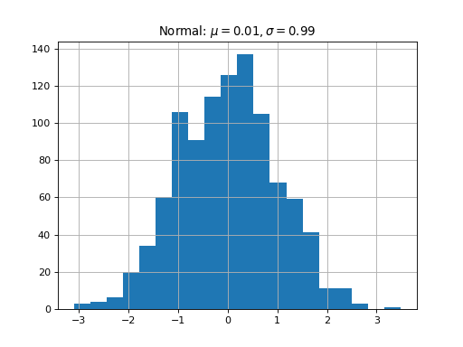

analysis_modules.cavity_analysis package
Submodules
analysis_modules.cavity_analysis.cavity_analysis module
- class analysis_modules.cavity_analysis.cavity_analysis.Cavities(cavities_list=None, save_folder='None')[source]
Bases:
objectCavities object is an object containing several Cavity objects.
Methods
add_cavity(cav)Adds cavity to cavities :param cav: Cavity object :type cav: object
linspace(start, stop[, step])Like np.linspace but uses step instead of num This is inclusive to stop, so if start=1, stop=3, step=0.5 Output is: array([1., 1.5, 2., 2.5, 3.])
Plot axis fields of cavities
plot_cavities_contour([opt, n_cells])Plot geometric contour of Cavity objects
Plots bar chart of power quantities of interest
Plot bar chart of fundamental mode quantities of interest
Plot bar chart of higher-order mode's quantities of interest
Plot cryomodule power comparison
Plot dispersion curve for the cavities
plot_multipac_triplot(folders[, kind])Plot Multipac triplot
plot_power_comparison([fig, ax_list])Can be called using
cavities.plot_power_comparison()Plot loaded quality factor versus input power for fundamental power coupler (FPC)
Plot surface fields of cavities
ql_pin(labels, geometry, RF, QOI, Machine[, ...])Calculate the value of input power as a function of loaded quality factor
qois(cavity, op_field)- param cavity
Cavity object
qois_fm()Retrieves the fundamental mode quantities of interest
qois_hom()Retrieves the higher-order modes quantities of interest
remove_cavity(cav)Removes cavity from cavity list :param cav: Cavity object :type cav: object
save_all_plots(plot_name)Save all plots :param plot_name: Name of saved plot :type plot_name: str
set_cavities_abci(dir_list)Set folders to read ABCI results from
Sets cavities analysis field range.
set_cavities_slans(dir_list)Set folders to read SLANS results from
write_contour(cav[, opt, n_cells])Write geometric contour for cavities
arcTo
arcTo2
compare_power
lineTo
make_excel_summary
make_latex_summary_tables
run_abci
run_multipacting
run_slans
- static linspace(start, stop, step=1.0)[source]
Like np.linspace but uses step instead of num This is inclusive to stop, so if start=1, stop=3, step=0.5 Output is: array([1., 1.5, 2., 2.5, 3.])
- plot_cavities_contour(opt='mid', n_cells=1)[source]
Plot geometric contour of Cavity objects
- Parameters
opt ({"mid", "end", "all"}) – Either plot contour for only mid cells or end cells or the entire cavity
n_cells (int) – Option used only when opt is set to “all”
- plot_multipac_triplot(folders, kind='triplot')[source]
Plot Multipac triplot
- Parameters
folders (list, array like) – List of folder to read multipacting results from
kind –
Notes
This will be changed later so that the multipac results will be in the same location as the SLANS and ABCI results
- plot_power_comparison(fig=None, ax_list=None)[source]
Can be called using
cavities.plot_power_comparison()\[W^{3 \beta}_{\delta}\]- self.plot_power_comparison(self, fig=None, ax_list=None)
- Parameters
fig (matplotlib figure) –
ax_list (list of matplotlib axes object) –
- plot_ql_vs_pin()[source]
Plot loaded quality factor versus input power for fundamental power coupler (FPC)
- ql_pin(labels, geometry, RF, QOI, Machine, p_data=None)[source]
Calculate the value of input power as a function of loaded quality factor
- Parameters
labels (list, array like) – Descriptive labels on matplotlib plot
geometry (list, array like) – List of grouped geometric input parameters
RF (list, array like) – List of grouped radio-frequency (RF) properties
QOI – List of quantities of interest for cavities
Machine – List of grouped machine related materials
p_data –
- qois(cavity, op_field)[source]
- Parameters
cavity (object) – Cavity object
op_field (float) – Cavity operating field
- Return type
Dictionary containing quantities of interest (normed optional).
- qois_fm()[source]
Retrieves the fundamental mode quantities of interest
- Return type
Dictionary containing fundamental mode quantities of interest (normed optional).
- qois_hom()[source]
Retrieves the higher-order modes quantities of interest
import matplotlib.pyplot as plt import numpy as np x = np.random.randn(1000) plt.hist( x, 20) plt.grid() plt.title(r'Normal: $\mu=%.2f, \sigma=%.2f$'%(x.mean(), x.std())) plt.show()
(Source code, png, hires.png, pdf)
 - Return type
Dictionary containing higher-order modes quantities of interest (normed optional).
- remove_cavity(cav)[source]
Removes cavity from cavity list :param cav: Cavity object :type cav: object
- save_all_plots(plot_name)[source]
Save all plots :param plot_name: Name of saved plot :type plot_name: str
- set_cavities_abci(dir_list)[source]
Set folders to read ABCI results from
- Parameters
dir_list (list, array like) – List of ABCI directories for the corresponding cavities
{kind=link}
{kind=link}
- class analysis_modules.cavity_analysis.cavity_analysis.Cavity(n_cells, l_cell_mid, freq, vrf, R_Q, G, Epk_Eacc, Bpk_Eacc, inv_eta=219, name='Unnamed', op_field=1000000.0, wp='Z', op_temp='2K', material='bulkNb')[source]
Bases:
objectCavity class defines cavity parameters and operation settings for several cavity analysis
Methods
get_Eacc()Gets the accelerating field range of the Cavity object
Gets the operating field of the cavity
set_Eacc(Eacc)Sets the accelerating field range of analysis for the cavity
set_op_field(op_field)Sets the operating field of the cavity
get_inv_eta
get_power
get_vrf
make_latex_summary_tables
on_motion
plot_multipac_triplot
plot_ql_vs_pin
ql_pin
run_abci
run_multipacting
run_slans
set_abci_qois
set_inv_eta
set_slans_qois
set_vrf
write_cavity_for_multipac
- get_Eacc()[source]
Gets the accelerating field range of the Cavity object
- Return type
Accelerating field range of cavity. To set the accelerating field range, use
- get_op_field()[source]
Gets the operating field of the cavity
- Return type
returns operating field value
- set_Eacc(Eacc)[source]
Sets the accelerating field range of analysis for the cavity
- Parameters
Eacc (list, array like) – Accelerating field range of interest
- class analysis_modules.cavity_analysis.cavity_analysis.Machine(name, rho)[source]
Bases:
objectMethods
add_op_points
analyse_machine
compare_cavities_for_op_point
remove_op_points
- class analysis_modules.cavity_analysis.cavity_analysis.OperatingPoint(op_file_path)[source]
Bases:
objectMethods
add_cavities
analyse
get_I0
get_energy
get_sigma_bs
get_sigma_sr
load_from_operating_points
load_operating_point
remove_cavities
set_I0
set_beam_properties
set_energy
set_sigma_bs
set_sigma_sr